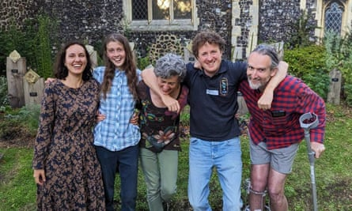
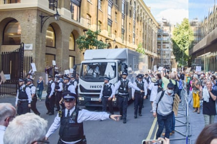
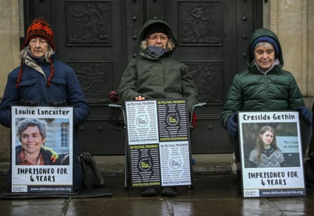

July 2024
Locked in a tiny metal box in a prison transport van rattling its way to HMP Bronzefield, in Middlesex, I felt at peace. I was on trial with four other Just Stop Oil protesters over the group’s non-violent direct action on the M25 motorway in 2022. The judge had told the jury to ignore evidence of the climate emergency, and we were not allowed to talk in depth about the climate breakdown when defending our actions. But we do not have the time to pretend the existential threat we face is not real. My sense of peace came from having an opportunity to speak out about the crisis during our trial.
When I arrived in the cell that night, hearing the key turn in the lock, I felt cut off from the world. I was being held on remand, there was still a week of the trial to go, and communication with my co-defendants was nearly impossible. The support we were receiving from the outside, however – messages of solidarity, articles and letters – was incredibly sustaining. One day, 11 people sat outside the court holding signs that read: “Jurors have an absolute right to acquit a defendant according to their conscience.” They were arrested.
Being on trial while in jail can be rough. Each day, I was woken at 5.30am and given a few slices of toast, before being taken to a holding room with others from our group. We would then be put in a van for a two-hour journey to court, where we would again spend much of our time in concrete holding cells. They were long days. It usually took hours to get back to prison, and often we would miss dinner. Food was scant. It was hard to prepare for the trial: you’re not allowed to bring pens or paper with you, so I wrote my closing statement on the back of an envelope in blue crayon.
Sentencing day was tense. In his statement, the judge accused us of being fanatics who don’t care about the rights of our fellow citizens. These accusations are regularly thrown at us, but they can still take the wind out of you. There were times I had to lie on my cell floor until my heart stopped pounding. I had been acting out of love to bring attention to the threat to humanity and hold the government to account.
The judge had suggested we would be in prison for a long time, but that still didn’t prepare us for our sentences. Four of us were handed four-year terms for conspiracy to cause public nuisance, while the Extinction Rebellion and Just Stop Oil co-founder Roger Hallam got five. They were the longest sentences ever given to non-violent protesters in the UK. I had already been in jail for a few weeks that year because of my activism, and felt prepared for what was ahead of me. My family – at 58, I have three adult children – were supportive. Even so, the atmosphere felt very heavy. A UN rapporteur had attended our trial and said our sentences were “not acceptable in a democracy” . Signs like these make me hope that change is coming. But in the meantime, I had to return to HMP Bronzefield.
Louise Lancaster, centre, with the other protesters, Lucia Whittaker De Abreu, Cressida Gethin, Daniel Shaw and Roger Hallam.Photograph: Just Stop Oil
Walking on to a prison wing for the first time provokes anxiety. Sound echoes everywhere as there are only hard surfaces, and the noise can be deafening. You hear people in distress, trying to make themselves heard. You start on an induction wing, but within a week most people will be sharing a cramped concrete cell with a stranger.
Many women in HMP Bronzefield are on remand, awaiting trial or sentencing. The community is an ever-changing mix of people, only a minority of whom, counter to public perception, are accused of violent crime. There are people facing drug charges. Victims of substance abuse. People with complex mental health needs. Homeless people. People with outstanding asylum cases. People engaged in civil resistance. The list goes on.
Many of them will be found not guilty, but they still have to wait in jail for an indeterminate length of time, becoming increasingly anxious and with no news of a trial date. It is a brutal system. As I meet more women and hear their stories, I wonder: who is it helping to incarcerate non-violent, low-risk people before they are even tried?
Cells differ in size. Mine is like a box room. Others are smaller and can only fit a small chair between the bed and the wall. There are bunk beds. Cells usually have a monitor that acts as a basic TV and radio. There’s a toilet and sink in the corner, which is necessary as we’re locked in for about 15 hours a day. We are given two vacuum flasks, which we fill with hot water before we get locked in. There is a phone in the cell, which we pay to use. Showering, queueing for food, and exercise in a tiny yard are communal activities. Accessing anything online – from selecting your meals to buying phone credit, booking a visit or arranging to speak to a GP – is done through one digital kiosk shared by nearly 40 people.
My approach to jail is to have very low expectations from the start, to lessen frustration. This strategy proves useful, as for six weeks I have only two sets of clothes. My other clothes languish at reception while I wait for an appointment to collect them. This snail’s pace is common, and tough for people with urgent needs. Queueing for more than an hour a day to collect medication is not unusual, and often takes up people’s daily hour allocated for fresh air.
My cellmate, Sue, and I get along well. I’m lucky. I have not experienced any negativity about what I’m in for. I’ve found most people don’t care too much about why others are here, with the exception of offences against children. Sue and I have lived very different lives, but we share a concern for the wellbeing of other prisoners, and recognise we’re all in this together.
Today, I’m woken abruptly at 7.30am by the jangling of keys and loud voices by the kiosk outside our cell. Sue and I are unlocked at 8am, 30 minutes before work. We can get cornflakes and two slices of toast from the servery, though most people head straight to the hot-water tap to make coffee.
There is a clamour to the morning routine. Groggy chatter over cereal. Blaring music from the cells of prisoners no one dares to challenge. Shouting and bar-rattling from a group demanding to be let out to collect medication. Others appeal to officers for more paper in the kiosk to print out movement slips. We all need a movement slip to go anywhere in the prison. It looks like a shop receipt and is your passport through the multitude of locked gates between you and your appointment. No slip, and you stay locked in your cell.
Thankfully I have my slip, so after breakfast I’m released from my wing and join a group of prisoners flowing through another barred gate to emerge into a garden. It’s a brief moment of fresh air before we head into another stark building with windowless rooms and bars across every entrance.
I spot a friend and we line up for a fingerprint scan. I have found a job in a workshop, refurbishing old bicycles that go to charity. It can be stimulating to learn a skill, and practical tasks give you purpose. Other workspaces run similarly: there’s a cafe, a salon, an art centre, gardens and a cleaning academy.
At 11.45am, we head back to our wings for lunch, and are then locked in our cells. I am let out at 2pm, and once again head to work. Today our cells are searched for drugs. The officers take our extra flask and cup, and what they consider excess fruit. Sue is left with the job of reassembling our home.
When I get back I thank her and, deflated, we join the queue for dinner (served about 4-5pm), plastic plates in hand. Tensions can flare at queue times, especially after cell searches. Officers change so frequently that it’s often community-savvy inmates who step in. Today, my friend Kay talks down a pair of prisoners and prevents them from kicking off. She supports everyone with love and care and timely injections of humour.
Our hot meal is followed by our daily hour of fresh air. It’s warm outside; most people sit and vape and soak up the sun. Vape oil is a valuable commodity in the prison.
I walk round our yard with Anne. She’s depressed. After being released on probation last month, she missed an appointment with her probation officer because she was sick. She was recalled to prison and now has to complete her full sentence. Prison recall rates are shocking: a recent report found that for every 100 people released on licence from April to June 2024, 73 were recalled. Sometimes that’s due to administrative errors relating to tags, but many people don’t get the support they need to rebuild their lives on the outside. One woman I know who struggled with alcohol misuse was just told before she was released: “Try not to drink.”
When officers call us back inside, it’s like a starting gun is fired. Some rush to shower or grab flasks for hot water. Others conspire to stay out as long as possible, heralding a lot of shouting, arguing and the eventual slamming of everyone’s doors for the night. Then, to the relief of some but the misery of others, time, lots of time. It’s common to hear banging and shouting through the night.
There are many people here who shouldn’t be in a prison setting. They should be getting mental health or drug rehabilitation support. This is a destabilising environment for everyone, and particularly for them. Our whole prison system needs to change. There’s a new government in place, and James Timpson has been appointed as prisons minister. I hope he gives the whole system a radical rethink.
August
One of my priorities is to stay connected to what is happening across the UK and the world. In prison, without the internet and with scant access to newspapers – which are often censored – limited TV and radio channels are the only source of news. In a shared cell, if one person watches the TV or listens to the radio, you both do. The space is too tight.
Fortunately Sue and I both want to catch up on daily news. This week we are stunned by the killing of three children in Southport who were enjoying a Taylor Swift-themed dance class. Both of us are parents, and our thoughts are with their anguished families and community. We watch the vigils in silence.
In the following days, we are sickened by the racially motivated hate riots whipped up by social media posts and exacerbated by irresponsible political rhetoric. Later, those arrested for violent assault and arson will be sentenced to an average of two years. The contrast between their sentences and my own feels grim and stark. Fellow prisoners tell me they are shocked by the discrepancy. One Saturday, I catch the Any Answers? phone-in on Radio 4. It is dominated by callers arguing for and against the contrast. The court response to the rioters does seem to wake more people up to how unfit for purpose our criminal justice system is.
A van taking the Just Stop Oil protesters from court to prison in July 2024.Photograph: Sopa Images/LightRocket/Getty Images
In the meantime, I find myself craving connection to those I love – the absence of which is the biggest contrast with life outside. In prison, I feel like a layer of my being has been stripped from me.
One Friday, around 4pm, I’m in the dinner queue, waiting for an onion and tomato wrap, and talking with Pam. She’s on remand for actions in protest against the horrific situation in Gaza. She has been classified as a terrorist. This means she is restricted from outside contact and is struggling to be allowed phone calls, emails or visits. Not surprisingly, she feels isolated.
After dinner, I talk to Sue, who is distraught. She was not collected in time to make her 30-minute video call with her daughter and tiny granddaughter (video calls happen in a room on the other side of the prison, and prisoners have to be collected and escorted there). She is feeling the loss of connection acutely. Her frustration is compounded by news of yet another postponement of her trial. She’s on remand and highly likely to be found not guilty.
We wake up early with the sun streaming through the curtainless window. Saturday turns out to be a good day. Fresh air is even called twice. I go to chess club, run by a very good chess player on the outside. There are some stimulating activities offered here: students from a university are running sessions on philosophy.
I wouldn’t say I feel more “at home” now, but I’m more aware of how things work. Inside, I can feel joy at things, or get excited, but I don’t get the intensity of feeling that I would on the outside. It is like something – a crucial part of myself – has been left out there.
September
I have a knot in my stomach as I climb down from my bunk this morning. Things are again in flux. My pictures are no longer clinging to the wall with toothpaste. My clothes are rolled and stuffed into plastic bags. Books and toiletries are in my laundry bag. Today I am being transported to another prison, HMP Send in Surrey.
I feel mixed emotions. I requested the move, was happy to be rejoining my co-defendants Cressie and Lucia, and expected a calmer environment. But Sue, my neighbour Rachel and the bike workshop have kept me going. We exchange homemade cards and tearful hugs. We inmates are regularly moved like pawns on a chess board. It’s difficult to settle. Inter-prison communication is discouraged and hard to set up, so most lose contact and just fish for snippets of news of old friends when new prisoners transfer.
After the concrete fortress of Bronzefield, HMP Send is a breath of fresh air – quieter, with more greenery. It is also a bit like going back in time. Everything is done on paper, the walls are painted with murals and there is a public address system that reminds me of a 70s holiday camp I stayed in when I was nine. My fellow newcomers and I are met by a helpful inmate Jenny, who explains how things work, then sends us on our way to the induction cells.
At 9am the next morning, Jenny is there again to give us a tour. When we enter the servery, I am suddenly hugged by Lucia, who spots me while working in the kitchen. A beautiful reunion. I give Cressie a hug later that day.
Conversation, connection and mutual support flow more easily here – and thankfully I have a cell to myself. At Bronzefield, many people are held while awaiting trial, and people are constantly coming in and out. At Send, people have already been sentenced. People’s reasons for being at Send are generally a taboo subject, but we sense we are on the same emotional journey: we feel the low mood and the dull ache of missed friends and family that never abates.
At lunch I sit next to Fran, also a recent transfer from Bronzefield. She valued the money she got from working there and was concerned she would struggle at Send. It may sound strange that prisoners are paid, but this has to be the case. Not everyone has people on the outside who can send in funds. Food is provided, but you need money to make phone calls, and wages are scant. You get paid anywhere between 50p and £3 for a two- to three-hour work session. A standard wage is £15 a week, and you can easily spend half your wages on calls. Most people will also need to buy toiletries and extra food provisions at the prison shop. Vapes are a common expense – vape oil costs £3 a box, and people often buy five boxes a week. The basic prison pillow is uncomfortable, and there’s an option to buy a better one.
Virtually everybody I speak to who wants to share their story has been a victim of domestic violence or other forms of violence. Most prisoners arrive carrying a lot of trauma. They have failed to get the support they need on the outside, and prison is used as a convenient way to lock them out of sight.
October
HMP Send feels like a community. It needs to. Many inmates are facing decades within these walls, a chilling thought that regularly hits me. I’ve been here just one month, and already I sense my world shrinking. Time and again I well up with tears of sadness, and sometimes outrage, at others’ stories. There are women incarcerated for up to a third of their lifetime despite being deemed no risk to the public.
There are things that occupy us here. There’s work in gardens or kitchens, vocational training, such as hairdressing, education at the Open University, peer support, clubs such as choir or crochet. There are mental health support programmes and gym facilities. The chaplaincy runs services and offers a range of support for all faiths.
It feels chillier now, so I’m happy to have been able to collect property brought in for me – things that were sent by friends and approved by prison staff: winter clothes, towels, a radio, an exercise mat and art materials.
At 8.30am, I go to work in the gardens, where we grow vegetables in polytunnels. It is refreshing to be outside, surrounded by trees. The morning shift finishes at 11.45am, and we return to our cells to be locked behind doors for the noon roll-call and lunch.
Meals here generally follow a four-week rotation. At breakfast, you can have a packet of cereal. Lunch will be a hot meal. Dinner is often cold, perhaps a salad with some beans or a vegan sausage roll. It’s an improvement on Bronzefield, where a lot of the food was frozen. We even thought the fruit might be frozen because it was so tasteless.
I miss the ordinary activities of everyday life. I value the prison parkrun every Saturday morning, which links with the national event. We do seven loops of the same circuit, within the walls.
After a run today, I speak with Dawn as we cool down. She is on a 20-year sentence for having killed someone in a moment of diminished responsibility (a legal term that refers to someone’s judgment being impaired due to “an abnormality of mental functioning”). These extenuating circumstances were not properly considered in court. She would love to appeal, but it is too expensive. The only way would be to sell her home and render her children homeless. The law favours the wealthy, people with enough money to pay their way through the system.
November
The result of the US election has made this feel like a particularly dark time for the environment and social justice. I’m sick to the core that someone who advocates “drill, baby, drill” has gained such power. I talk about the news with my co-defendants and friends in the garden. We feel deflated, but being together, sharing how we feel, lifts our spirits.
As weeks pass, I struggle to recall how long I’ve been in prison. I calculate it as just over 20 weeks. I’m not institutionalised, but I have got into a rhythm. The key factors in determining how manageable prison life is seem to be location, luck and whether you have “enhancement”, a status you can apply for, which grants you more privileges. Most prisoners aim for enhancement, but it can be hard to attain. I never bothered at Bronzefield, but once I knew I was moving to Send, I tried hard. At Send, your standard level only gives you three outside visitors a month. With enhanced, you could get four.
The enhanced wing at Send also gives prisoners better accommodation, and more time unlocked. People have been waiting years to get in. When I arrived it was suggested I apply immediately, and I was offered a place in five weeks. I didn’t take it. People had been waiting a long time, and it suggested to me that it was a case of “if the face fits”. It seems to be easier to be favoured if you’re white and middle class.
Protesters in Cambridge, UK, highlighting the plight of those imprisoned for peaceful protest.Photograph: Sopa Images/Shutterstock
As the month draws to a close, I feel I’m coping well with my incarceration. Many people struggle: with unexpected lock-ins, the dehumanisation, and the anguish of separation from children, parents, friends. As I write, we’ve been locked in our cells for two hours, when we would usually be exercising and socialising. There has been a prisoner miscount and they are recounting us. Their mistake becomes our problem.
Over time, you learn to accept the things you cannot change and look for ways to make the most out of the things you can. Every morning, I get up early and exercise in my room, shower and dress for work, and then have breakfast while listening to the news on the radio. I pack the week with variety: I have choir on Monday morning, have joined schemes supporting mental health, and am a mentor for a programme supporting prisoners learning how to read.
Visits are my favourite times – those couple of hours connecting with friends and family are truly irreplaceable. I cherish the physical contact – hugs are allowed at the start and end. During a visit today, I sit in the booth next to Dawn. She speaks to her husband four times a day, and at visits they hold hands and play Scrabble, just like they did on the outside.
Not being there when there’s an emergency or a key event is one of the main things that makes you feel pretty grim in here. When my long sentence was revealed, I knew it meant I would miss my daughter’s wedding. Thankfully, that has been postponed. But in the intervening times there are events – Christmas, people’s birthdays – that you have to miss. These are moments that can’t be repeated.
December
I start preparing for Christmas inside. Some of us in the gardens are doing a secret Santa, and the staff have allowed us to make wreaths with vegetation and wire. Though we probably won’t be able to bring them back to our cells, they are at least brightening up the polytunnels.
Festive fare in prison is limited. The Christmas Eve menu has a mince pie option for dessert, and on the 25th, lunchtime’s vegan offering is a festive slice, roast potatoes and veg. Otherwise, the menu is exactly the same as usual. But I have a bar of dark chocolate I’ve been saving up for Christmas, bought from my last Bronzefield shop three months ago. You learn to ration yourself. I get involved with carol singing on 9 December. There’s a carol service on Christmas Eve, then no work for a week. New Year’s Eve will have a craft morning, a film afternoon and a quiz.
Last week I was moved to a different wing. I’m delighted that my new cell has a hot shower. I’m hoping to do some festive cooking, but in this wing the kitchen is only available for one hour a week.
We are told that the government has plans to improve the quality of meals for all HMP institutions. This month’s Inside Time, the national newspaper for prisoners, leads with an article entitled Don’t Say Cheese! , which explains that prison cheese is apparently 79% water, palm oil and modified starch, and cannot legally be called cheese. (In January, this will change – my cheese-eating friend assures me it tastes like real cheese.)
Christmas Day in prison is my worst day here yet. I feel glum. I have lined up a lot of phone calls with family, but that – phone calls being the highlight of Christmas – brings home the reality of my situation. Meanwhile, one of our activist friends, who, at 77 years old, was released on home detention before Christmas, has been sent back into prison. The reason? Her wrists were too small for an electronic tag.
The craft morning, hosted by the chaplaincy and outside volunteers, offers us primary school level art activities – without the use of scissors. It is a jolly distraction, though with respect to the hosts, it does feel like we prisoners are often talked down to, as if we’re stupid. This seems to tally with a wider attitude to prisoners among the general public – that we are a different category of human.
My time in prison, however, has shown me the opposite. In this artificial environment, populated by people from all walks of life, with many considered on the edges of society, or those who are disadvantaged or have fallen on hard times, I have had my eyes opened to different perspectives. Recently, a friend came to visit me. She was concerned I was being bullied. I reassured her that wasn’t the case. In fact, I have found more people in prison who accept me and recognise the need to work against climate breakdown and reform our systems than I have in my community outside these walls.
How much divides a prisoner from a member of the public? If we listen to the press, the two are worlds apart. Prisoners are bad people who need to be locked away. But prisoners are parents, children, friends, with hopes and dreams. They’re integral parts of families and wider communities. A prison sentence can shatter more lives than one. Most prisoners want to rebuild their lives; they just need support to do so. The question we need to ask is not “What have you done?” but “What has happened to you?” We need to be bold and compassionate, and transition to a system focused on rehabilitation rather than punishment. This can be provided in our communities, rather than our prisons.
Outside each of the cell doors in HMP Send is a motivational phrase on a small laminated piece of card. My door has this one: “The secret of change is to focus all your energy not on fighting the old but on building the new.” I pass it every day, and it’s this spirit of hope, resistance and belief in radical change that I’m carrying into the new year.